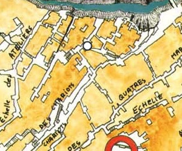

L'auberge Lebrethon
Cette auberge située au cœur de Laelith pourrait permettre d'établir plusieurs liens entre des aventuriers et certains lieux emblématiques de la cité. Entre Jeremy le clerc du temple voisin, Columbau le jeune fouineur fiancé à la fille de la patronne, et Atlas le gendre qui officie comme guide dans la cité, les occasions ne devraient pas manquer.
Histoire
1447. Vilbarne Lebrethon, ingénieur, vient de terminer la rénovation de tout le système hydraulique du temple du Poisson d'argent dont les travaux ont commencé il y a déjà 5 ans. Avec ce que lui paye le temple, il se fait construire une maison au 69 de la rue du Lyon, sur la terrasse de la Main qui travaille, près de la faille. L'ingénieur, alors âgé de 42 ans, s'y installe avec ses parents, sa femme Noémie, son frère et son unique fils de 17 ans, Nayël. Quelques mois plus tard, il ouvre au rez-de-chaussée une taverne, la femme de Vilbarne ayant toujours rêvé d'en diriger une afin de faire profiter au plus grand nombre de ses talents culinaires. L'affaire prend du temps à s'installer, mais petit à petit la taverne de l'Escargot se fait un nom, Noémie ayant un réel don pour préparer des choses simples mais délicieuses. Le couple loge à l'étage, ainsi que les parents et le frère, qui dispose de sa propre chambre. Vilbarne s'est réservé également une pièce qui lui sert de bureau et où il peut se concentrer et travailler sur ses plans et ses croquis.
1460. Nayël se marie avec sa compagne Darthie, de 11 ans sa cadette, qui vient s'installer à la maison des Lebrethon. Elle donnera naissance à leur premier enfant, Léonidas, à la fin de l'année. Les parents de Vilbarne sont décédés quelques temps auparavant et la chambre a été laissée vacante.
1462. Âgé de 32 ans, Nayël prend sans enthousiasme la succession de son père qui se retire du métier. Sans enthousiasme car, bien que chargé d'un grand projet pour les bains publiques de la cité, sa passion est l'architecture, pas l'hydraulique. L'année qui suit, la mère de Nayël, Noémie, décède suite à une mauvaise grippe. C'est alors Darthie qui prend la relève à la tête de la taverne. Changement dynamique, la femme de Nayël n'ayant pas le même tempérament que sa belle-mère. Elle en profite par exemple pour louer rapidement la chambre vacante et libère un espace à l'étage pour les clients désireux de jouer tranquillement.
Auberge. Lieu où les voyageurs peuvent se loger et se restaurer.
Taverne. Lieu où l'on peut boire et, parfois, manger.
1465. Après Ermeline deux ans auparavant, naissance de la dernière des filles de la famille, Célestine. Cette même année décède le frère de Vilbarne. Les enfants vont alors avoir une chambre à part car Vilbarne, ne pouvant plus monter les escaliers, loge maintenant au rez-de-chaussée.
1474. Vilbarne n'est plus, il s'est éteint à son soixante-neuvième printemps après une vie bien remplie. Depuis cette année, tout le monde appelle Nayël le « père Lebrethon », lui qui est alors âgé de 44 ans. Le couple amènage sa chambre en bas afin que Darthie puisse louer une deuxième chambre à l'étage. Deux ans plus tard, Nayël agrandit la maison et fait construire au rez-de-chaussée une cuisine attenant à la salle de la taverne et équipée de trois grands fourneaux pour sa femme, la taverne de l'Escargot marchant de mieux en mieux.
1477. Léonidas, le fils de Nayël, se marie. Le père Lebrethon fait alors construire une nouvelle extention de deux étages afin de les loger tous les deux et leur future petite famille, sa belle-fille étant enceinte. L'année qui suit Nayël est grand-père pour la première fois et Darthie ajoute à la carte de la taverne ce qui deviendra sa spécialité et fera sa renommée sur toute la terrasse : l'andouillette.
LA FAMILLE LEBRETHON
Nayël, le père Lebrethon (59 ans), architecte.
Darthie, femme de Nayël (48 ans), tient l'auberge.
Léonidas, le fils (29 ans), ingénieur hydraulique, comme son grand-père Vilbarne.
Valentine, femme de Léonidas (27 ans).
Ermeline, la fille aînée (26 ans).
Atlas, mari d'Ermeline (26 ans), guide de Laelith.
Célestine, la fille cadette (24 ans), fréquente un jeune fouineur.
AUTRES PNJ
Columbau, fiancé de Célestine, jeune fouineur.
Jeremy, locataire, clerc au temple du Poisson d'argent.
1483. La fille aînée du père Lebrethon, Ermeline, se marie. Nayël leur emménage une pièce au premier étage et accueille ainsi son beau-fils dans sa maison. Il commence également à ce moment là à commencer à travailler sur les plans de ce qui sera le deuxième étage, qui verra concrétement le jour l'année suivante. L'établissement prend alors officiellement le nom d'auberge du père Lebrethon, car c'est comme cela que tout le monde l'appelle, et fait office à part entière d'auberge maintenant, offrant aux visiteurs quatre belles chambres au deuxième étage, décorées par Darthie et ses deux filles.
1487. Au mois de Findefroid, le fils de Nayël a un deuxième enfant, et au mois de Mortefeuille de la même année sa fille donne le jour à la première petite-fille du père Lebrethon.
1489. Aujourd'hui, l'auberge tenue par Darthie, aidée de ses deux filles et de sa belle-fille, marche très bien. Le gendre de Lebrethon travaille comme guide à Laelith et accueille les nouveaux arrivants à leur sortie du Lazaret, leur proposant un petit tour de la ville et les invitant bien entendu à l'auberge du père Lebrethon au final. Le fils de Nayël a reprit en main l'affaire familiale d’ingénierie hydraulique, pendant que le père Lebrethon, à 59 ans, se consacre enfin pleinement à sa passion, l’aménagement et l'architecture d'intérieure. Et Célestine fréquente Columbau, un tout jeune fouineur qui n'est autre que l'assistant du Premier fouineur Lamb. Des quatre chambres, une est louée à l'année par Jeremy, un clerc qui travaille au temple du Poisson d'argent. Le père Lebrethon ne peut pas le voir, mais il plait à Darthie qui le trouve très bien élevé. En plus il paye toujours en temps et en heure, alors...
Le père Lebrethon
Sa femme Darthie
Leur fille cadette, Célestine
La taverne de l'Escargot en 1465
L'établissement tel qu'il était après que Darthie l'ait pris en main.
- Taverne
- Salle commune de la famille
- Chambre de Vilbarne
- Réserve
- Salle de jeux
- Couloir
- Chambre de Naÿel et Darthie
- Chambre louée
- Bureau de Naÿel
- Chambre des trois enfants
{kind=link}
La taverne de l'Escargot en 1465 (4000 x 2100)
La taverne de l'Escargot en 1477
La taverne grandit. La famille loue deux chambres et le père Lebrethon est maintenant grand-père.
- Taverne
- Salle commune de la famille
- Bureau de Naÿel
- Réserve
- Maison du fils Léonidas et de sa famille
- Cuisine
- Salle de jeux
- Chambre du fils Léonidas et de sa famille
- Couloir
- Chambre louée
- Chambre des deux filles, Ermeline et Célestine
- Chambre louée
- Chambre de Naÿel et Darthie
{kind=link}
La taverne de l'Escargot en 1477 (4000 x 2379)
L'auberge du père Lebrethon en 1489
La maison telle qu'elle est de nos jours. Au deuxième étage les quatre chambres de l'auberge, au premier les appartements de la grande famille Lebrethon, et la salle principale au rez-de-chaussée. Chaque lit coute 8 pièces d'argent la nuit. Il faut payer les lits vides de sa chambre si l'on veut être sûr de ne pas devoir la partager.
- Taverne
- Salle commune de la famille
- Bureau de Naÿel
- Réserve
- Maison de Léonidas et de sa famille (2 enfants)
- Cuisine
- Salle de jeux
- Chambre du fils Léonidas et de sa famille
- Couloir
- Chambre de Naÿel et Darthie
- Chambre d'Ermeline et de sa famille (1 enfant)
- Chambre de Célestine
- Couloir
- Chambre #1 de l'auberge (4 lits)
- Chambre #2 de l'auberge (4 lits)
- Chambre #3 de l'auberge (6 lits)
- Chambre #4 de l'auberge, occupée à l'année par un clerc du temple du Poisson d'argent
{kind=link}
L'auberge du père Lebrethon de nos jours (4000 x 3363)
Écrit par blueace, plan par Kosmic Dungeon